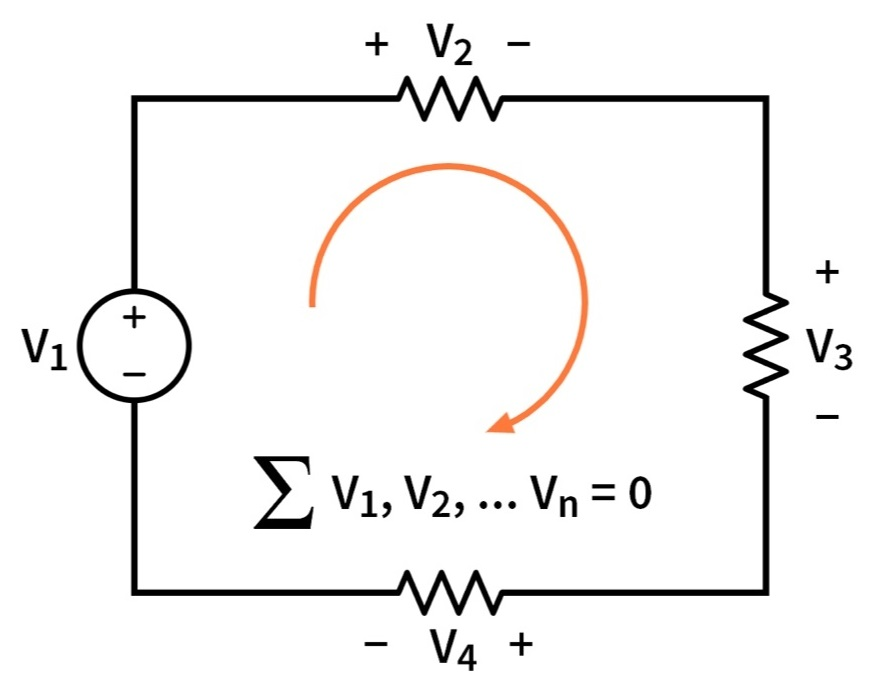
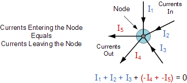
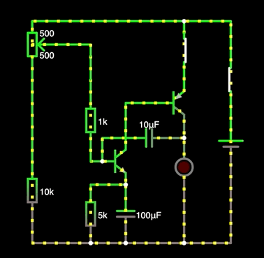

Circuit Analysis
Documentation for basic circuit analysis techniques that can be used in all circuits
Kirchhoff's Voltage Law (KVL)
The voltage into and out of any given node is zero

Kirchhoff's Current Law (KCL)
The amount of current entering and exiting a node is equal 
Circuit Simulators
FALSTAD
An Online Simulator that demonstrates the current flow of a specified electrical signal in an animated format.

NOTE - FALSTAD is NOT SPICE based. This means that while the components in FALSTAD are closely coorilated to SPICE, they are not 1 to 1.
SPICE
AKA Simulation Program with Integrated Circuit Emphasis. First developed in the 70s, SPICE has evolved into the primary circuit simulation software world wide. Highly configurable with detailed settings. LTSpice is a common light-weight program used around the world.